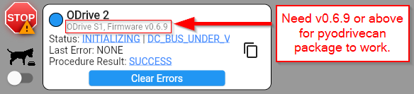
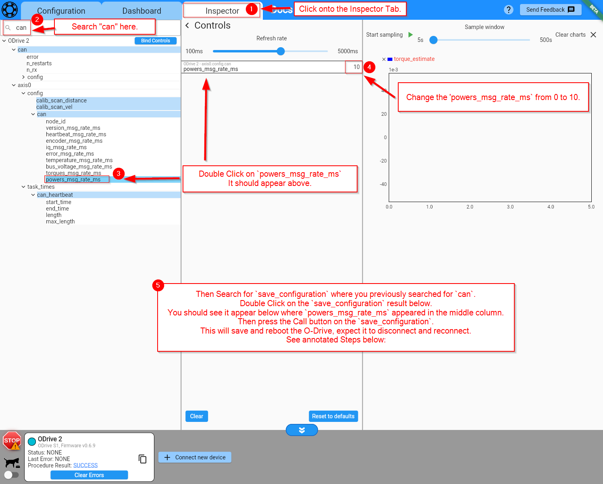

ODriveCan
This is a tutorial page on how to configure your O-Drive S1 or Pro in order to use this package. If this is your first time using your O-Drive, I strongly recommend to see the O-Drive Documentation and start with their tutorial and using the web GUI to get your motor spinning for the first time.
In this example I will be using a Raspberry Pi 2 Zero W with the WaveShare RS485 CAN HAT.
Tip
If you have not already set up your Raspberry Pi with the WaveShare RS485 CAN HAT, please visit this page: Raspberry Pi CAN Hat Setup
O-Drive GUI configuration
O-Drive Firmware >= v0.6.9 to use the pyodrivecan package.
You can check your O-Drive Firmware when connected to the GUI on the bottom left corner: 
{kind=link}
1. Power source
{kind=link}
2. Motor
{kind=link}
3. Encoder
{kind=link}
4. Control mode
{kind=link}
5. Interfaces

6. Apply and calibrate
If you have your O-Drive powered by a power supply/battery and want to plug in the USB, you need to have a USB Isolator.
{kind=link}
Success
{kind=link}
7. Powers message rate
Set powers_msg_rate_ms in Inspector Tab

{kind=link}
Congratulations
Success
{kind=link}